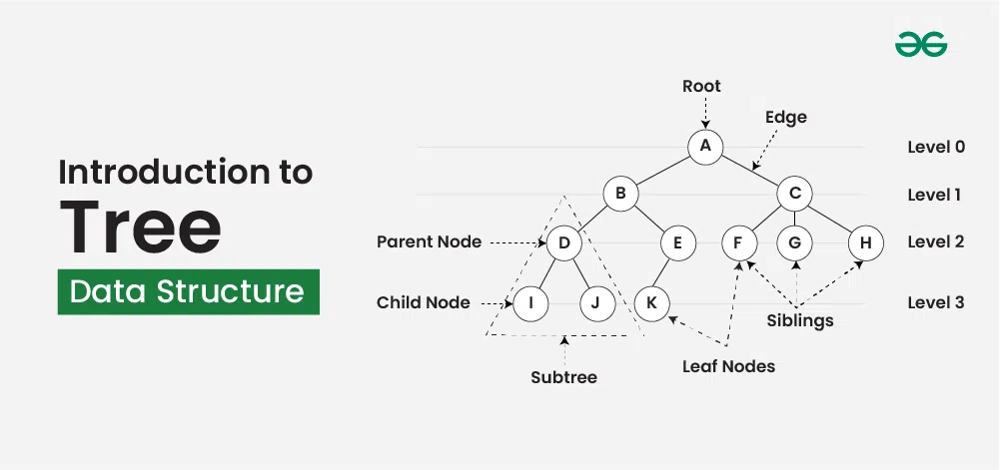

Introduction to C++
C++ is a cross-platform language that can be used to create
high-performance applications.
C++ was developed by Bjarne
Stroustrup, as an extension to the C language.
C++ gives
programmers a high level of control over system resources and memory.
The language was updated 5 major times in 2011, 2014, 2017, 2020,
and 2023 to C++11, C++14, C++17, C++20, and C++23.
Features of C++
-
Simple: It is a simple language in the sense that programs can be
broken down into logical units and parts, and has a rich library
support and a variety of datatypes
-
Machine Independent: C++ code can be run on any machine as long as a
suitable compiler is provided.
-
Low-level Access: C++ provides low-level access to system resources,
which makes it a suitable choice for system programming and writing
efficient code.
-
Fast Execution Speed: C++ is one of the fastest high-level
There is no additional processing overhead in C++, it is blazing fast.
-
Object-Oriented: One of the strongest points of the language which
sets it apart from C. Object-Oriented support helps C++ to make
maintainable and extensible programs. i.e. large-scale applications can be built.
Basic Syntax
#include <iostream>
using namespace std;
int main() {
cout << "Hello, World!";
return 0;
}
online c++ compiler
Introduction to Arrays
What is an Array ?
Array is a collection of items of the same variable type that are stored at contiguous memory locations. It is one of the most popular and simple data structures used in programming. In an array, all the elements are stored in contiguous memory locations. So, if we initialize an array, the elements will be allocated sequentially in memory. This allows for efficient access and manipulation of elements.

Characteristics of an Array :
- Fixed Size: The size of an array is defined at the time of its creation and cannot be changed during runtime.
- Homogeneous Elements: All elements in an array are of the same data type (e.g., all integers, all floats, etc.).
- Indexed Access: Elements in an array are accessed using indices, starting from 0 for the first element.
- Contiguous Memory Allocation: Array elements are stored in consecutive memory locations, which allows for efficient access and iteration.
Types of Array
-
On the basis of size
- Fixed Sized Arrays:
- Dynamic Sized Arrays:
-
On the basis of dimensios
- One-dimensional array (1-D arrays):
- Two-dimensional (2D) array:
Tutorial for Array
Introduction to Trees
Tree data structure is a hierarchical structure that is used to represent and organize data in the form of parent child relationship. The following are some real world situations which are naturally a tree.
Representation of Tree Data Structure:
- Fixed Size: The size of an array is defined at the time of its creation and cannot be changed during runtime.
- Homogeneous Elements: All elements in an array are of the same data type (e.g., all integers, all floats, etc.).
- Indexed Access: Elements in an array are accessed using indices, starting from 0 for the first element.
- Contiguous Memory Allocation: Array elements are stored in consecutive memory locations, which allows for efficient access and iteration.
Types of Trees
- Binary tree:In a binary tree, each node can have a maximum of two children linked to it. Some common types of binary trees include full binary trees, complete binary trees, balanced binary trees, and degenerate or pathological binary trees. Examples of Binary Tree are Binary Search Tree and Binary Heap.
- Ternary Tree: A Ternary Tree is a tree data structure in which each node has at most three child nodes, usually distinguished as “left”, “mid” and “right”.
- N-ary Tree:Generic trees are a collection of nodes where each node is a data structure that consists of records and a list of references to its children(duplicate references are not allowed). Unlike the linked list, each node stores the address of multiple nodes.
Tutorial for Trees
Introduction to Graphs
Graph Data Structure is a non-linear data structure consisting of vertices and edges. It is useful in fields such as social network analysis, recommendation systems, and computer networks. In the field of sports data science, graph data structure can be used to analyze and understand the dynamics of team performance and player interactions on the field.
What is Graph data structure ?
Graph is a non-linear data structure consisting of vertices and edges. The vertices are sometimes also referred to as nodes and the edges are lines or arcs that connect any two nodes in the graph. More formally a Graph is composed of a set of vertices( V ) and a set of edges( E ). The graph is denoted by G(V, E). Imagine a game of football as a web of connections, where players are the nodes and their interactions on the field are the edges. This web of connections is exactly what a graph data structure represents, and it's the key to unlocking insights into team performance and player dynamics in sports.